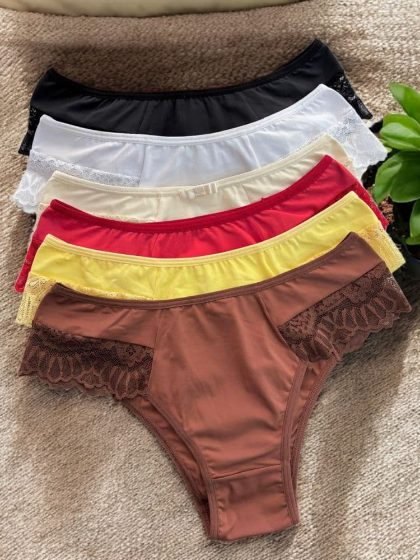

Engenheiro de software e analista de dados aplicado a Power BI. Construo sites e catálogos que vendem para negócios locais, e transformo dado operacional em decisão.
Sou engenheiro de software, com atuação também em análise de dados aplicada a Power BI. Já entreguei sites, catálogos e dashboards que hoje sustentam o dia a dia de negócios reais — documentando cada decisão técnica, pra ninguém ficar refém de gambiarra depois. Se seu negócio precisa de um sistema confiável ou de clareza pra decidir com dado, é isso que eu faço.
Catálogo com filtro por categoria, cor ou preço, e finalização de pedido direto no WhatsApp — sem depender de gateway de pagamento caro nem de manutenção complexa.
Modelagem de dados em esquema estrela, medidas em DAX e indicadores operacionais que viram decisão — prazo de entrega, custo, ocorrência, margem.
Se ficou alguma dúvida, chama no WhatsApp — respondo eu mesmo.
Quem só "sabe programar" resolve o que você pede. Um engenheiro de software entende o que pode dar errado antes de dar errado — arquitetura, segurança, como o sistema aguenta crescer. Isso significa menos retrabalho, menos gambiarra escondida e decisões técnicas que você pode confiar, mesmo sem entender de código.
Montar um gráfico bonito é rápido. Difícil é montar um modelo de dados que não quebra quando a base cresce, e que responde a pergunta certa — não só a que parece certa. Um analista de dados entende a origem do número, não só a aparência dele, então a decisão que você toma em cima do dashboard é confiável.
Direto comigo. Sem central de atendimento, sem menu automático, sem escalar pra "protocolo de suporte". Quem constrói o projeto é quem te responde depois.
Sim. Entrega não é ponto final — bug reportado eu corrijo, e ajuste pontual depois do lançamento faz parte do acompanhamento. Você continua com suporte direto comigo, do mesmo jeito que foi desde o início.
Eu grava um vídeo curto pelo WhatsApp explicando a causa real do problema — não só um "já corrigi" genérico. Você entende o que aconteceu e por quê, não fica no escuro esperando resposta.

Mais de 100 peças cadastradas sem travar o painel — aguenta o tamanho real do negócio.
Atualiza produto, preço e foto sozinha, na hora, sem esperar desenvolvedor pra tarefa simples.
Bug relatado vira bug corrigido ainda no mesmo dia.
Falha de segurança real foi encontrada e fechada antes de virar problema pro negócio.
Projeto de estudo aplicado a um caso real de operação logística — pedido, custo de frete, veículo, cliente e ocorrência — modelado em esquema estrela pra entender onde a entrega está falhando e por quê.
Essa seção ainda está vazia — é assim que fica antes do primeiro depoimento. Se você já fechou um projeto comigo, me manda seu retorno pelo WhatsApp; com sua autorização, coloco aqui.
Deixar feedback no WhatsApp